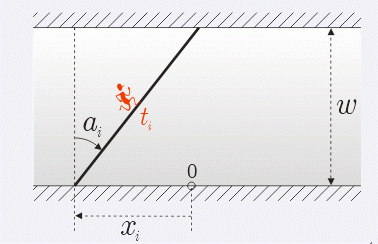

第一行3个数，为人的个数N(1<=N<=20000)，马路宽度W（1<=W<=1000），和你的速率最大值(1<=V<=1000) 接下来N行，每行3个数描述一个人，分别是初始位置X(-10000<=X<=10000)，过马路用的时间T(1<=T<=1000) 和过马路的角度ɑ(正数表示偏右，负数偏左，-5000<=ɑ<=5000，单位是1/60度)。
一条宽度为W的马路，N个人站在马路的某一边，0时刻每个人都以自己的速率和方向开始过马路（运动的过程中，速率和方向不变）。你可以任意选一个位置作为起始点，一个速率（速率有最大值限制）和方向，从0时刻混在那N个人中过马路（过马路的过程中的速率和方向不变），要求途中碰到的人尽可能的多（碰到的意思是，在某一时刻两个人的X,Y坐标相等，碰撞不会对方向速率造成任何影响）。给定N个人的初始位置和他们过马路的速率方向，你混在这N个人中,求出你最多能碰到多少人。 
第一行3个数，为人的个数N(1<=N<=20000)，马路宽度W（1<=W<=1000），和你的速率最大值(1<=V<=1000) 接下来N行，每行3个数描述一个人，分别是初始位置X(-10000<=X<=10000)，过马路用的时间T(1<=T<=1000) 和过马路的角度ɑ(正数表示偏右，负数偏左，-5000<=ɑ<=5000，单位是1/60度)。
你最多可以遇到多少人
5 20 5
-20 10 2700
20 10 -2700
-5 1 4000
-4 1 4000
5 1 -4000
2